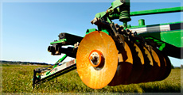

Agro technology:


- Precision Agriculture:
- GIS & GPS Technology: For mapping fields and precision planting. Variable Rate Technology (VRT): For applying seeds, fertilizers, and pesticides accurately. Yield Monitoring Systems: To analyze crop yield and productivity.

- Biotechnology:
- Genetically Modified Organisms (GMOs): For pest resistance and increased yield. Tissue Culture: For rapid plant propagation. Biofertilizers & Biopesticides: For sustainable crop protection.